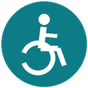
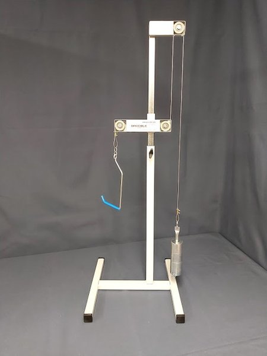

Handy, le tir pour tous
Le tir sportif est l’un des sports les plus ouverts aux personnes en situation de handicap : on tire assis ou debout, avec un matériel adapté, et l’on peut se mesurer à tous. Ce site présente le Handi-tir, pour le loisir, et le Para-tir, pour la compétition.
Handi-tir et Para-tir
La Fédération Française de Tir développe deux activités pour les personnes en situation de handicap moteur, sensoriel ou visuel. Depuis décembre 2016, le ministère des Sports lui a confié l’organisation du Para-tir.
Le Handi-tir
Le Handi-tir, c’est le tir de loisir proposé aux personnes en situation de handicap, au club, sans classification ni compétition obligatoire. Une excellente porte d’entrée : on découvre l’activité, on prend confiance, et l’on choisira peut-être un jour la compétition.
Du matériel en prêt
La FFTir mène une stratégie d’équipement des clubs et peut prêter du matériel adapté pour aider un club à accueillir des tireurs en situation de handicap. Stratégie fédérale et matériel en prêt ↗
Les Rencontres Para-tir
Des journées amicales organisées par la FFTir depuis 2022, pour découvrir le tir et se rencontrer, quel que soit son niveau. Les Rencontres Para-tir ↗
Le Para-tir
Le Para-tir est le tir de compétition pour les sportifs en situation de handicap. Au niveau international, il dépend du World Shooting Para Sport (WSPS) et figure au programme des Jeux paralympiques depuis 1976. En France, il est organisé par la FFTir, sur toutes les épreuves et à tous les échelons, avec le Comité paralympique et sportif français.
Ce qui change
- Les tireurs sont répartis en classes sportives selon leur handicap, pour que la compétition soit équitable.
- Les postes, les tables et les supports sont adaptés ; le règlement WSPS précise ce qui est permis.
- Un assistant de chargement peut aider les tireurs qui en ont besoin (SH2, déficients visuels).
Ce qui ne change pas
- Les mêmes armes, les mêmes cibles et les mêmes distances : 10 m, 25 m et 50 m.
- La même exigence de précision, de concentration et de sécurité.
- Les mêmes valeurs : progresser, se dépasser, partager.
La classification
La classification regroupe les tireurs qui ont des capacités sportives proches, du fait de leur handicap. Elle est obligatoire pour participer aux compétitions officielles de Para-tir : sans classification officielle, pas d’accès à l’échelon régional.
La démarche, étape par étape
- Se licencier dans un club affilié à la FFTir.
- Constituer son dossier de classification (dossier médical, formulaires de la FFTir).
- Prendre rendez-vous dès l’ouverture des visites de classification.
- Passer la visite avec un panel de classificateurs fédéraux.
- Recevoir sa carte de classification Para-tir, à présenter en compétition.
Conseil : commencez la démarche le plus tôt possible dans la saison, et faites-vous accompagner par un entraîneur formé au Para-tir. La classification Para-tir sur le site de la FFTir ↗
Les épreuves
Treize épreuves sont au programme des Jeux paralympiques : neuf à la carabine (R1 à R9) et quatre au pistolet (P1 à P4).
| Code | Classe | Épreuve | Genre |
|---|---|---|---|
| R1 | SH1 | Carabine 10 m debout | Hommes |
| R2 | SH1 | Carabine 10 m debout | Femmes |
| R3 | SH1 | Carabine 10 m couché | Mixte |
| R4 | SH2 | Carabine 10 m debout | Mixte |
| R5 | SH2 | Carabine 10 m couché | Mixte |
| R6 | SH1 | Carabine 50 m couché | Mixte |
| R7 | SH1 | Carabine 50 m 3 positions | Hommes |
| R8 | SH1 | Carabine 50 m 3 positions | Femmes |
| R9 | SH2 | Carabine 50 m couché | Mixte |
| P1 | SH1 | Pistolet 10 m | Hommes |
| P2 | SH1 | Pistolet 10 m | Femmes |
| P3 | SH1 | Pistolet 25 m | Mixte |
| P4 | SH1 | Pistolet 50 m | Mixte |
Et aussi, en France
Épreuves WSPS et nationales
- P5 pistolet 10 m standard et F5 pistolet 10 m vitesse (SH1).
- VIS et VIP : carabine 10 m debout et couché pour les déficients visuels.
- F10 pistolet 25 m standard (SH1) et F12 carabine 50 m 3x40 (SH2).
- F7 carabine 10 m couché et F13 carabine 50 m couché (classification française).
- Le para-trap aux plateaux.
Les compétitions
- Du département au championnat de France Para-tir, avec des finales dans les épreuves principales.
- Les Rencontres Para-tir, amicales et ouvertes à tous.
- Pour l’élite : coupes du monde, championnats d’Europe et du monde WSPS, Jeux paralympiques.
Les codes et la liste des épreuves évoluent avec les règlements : le règlement de gestion sportive de la FFTir et le règlement WSPS font foi.
Le matériel adapté
Le support SH2
Un support à ressort, conforme au règlement, porte la carabine des tireurs SH2. Il n’est jamais posé sur la table : on utilise des tablettes de tir aux normes WSPS.
Potence et bretelle
En classification française, la carabine peut reposer sur une potence à ressort, ou une potence modulable, ou être tenue avec une bretelle.


Tables, chaises et postes
Tables réglables, chaises de tir, accès en fauteuil au pas de tir : l’accessibilité du stand est la première condition pour accueillir.
Le viseur sonore
Pour les déficients visuels, un système électronique transforme la visée en son : plus le son est aigu, plus on se rapproche du centre.
Extensions de détente
Des adaptations de la détente sont permises selon le handicap, dans les limites du règlement WSPS.
L’assistant de chargement
Pour les tireurs qui ne peuvent pas charger seuls, un assistant identifié par un dossard charge l’arme, sans jamais aider au tir.
Commencer
- Trouver un club accessible près de chez soi : renseignez-vous sur l’accès au stand et le matériel disponible.
- Essayer en Handi-tir, pour découvrir l’activité à son rythme.
- Se faire accompagner par un entraîneur formé au Para-tir, qui adaptera la position et le matériel. Clubs et entraîneurs : accueillir et encadrer.
- Viser la compétition si l’envie est là : licence, puis démarche de classification.
Jeunes talents : le programme « La Relève » de France Paralympique repère les jeunes sportifs en situation de handicap ; la FFTir y participe. La Relève ↗
Les jeunes
Des épreuves de Para-tir existent pour les jeunes, de poussins à minimes, à la carabine (couché ou debout) et au pistolet 10 m, avec des tables adaptées, une potence ou une bretelle selon les cas. La fiche de classification est présentée à chaque compétition.
Ils portent le maillot bleu
La France compte parmi les grandes nations du Para-tir. Parmi les médaillés de la coupe du monde 2022 à Châteauroux : Tanguy de la Forest, Kévin Liot, Alain Quittet et Justine Bève (SH2), Jean-Louis Michaud, Cédric Fèvre et Didier Richard (SH1, carabine), Gaëlle Edon (SH1, pistolet).
Paris 2024 : à Châteauroux, Tanguy de La Forest remporte enfin ses premières médailles paralympiques, à sa sixième participation : l’argent en carabine 10 m debout SH2 (R4), puis l’or en carabine 10 m couché SH2 (R5). Il est l’un des porte-drapeaux de la cérémonie de clôture.
Les vidéos
Le Handi-tir et le Para-tir en images. La vidéothèque grandira au fil des ajouts. Un clic lance la vidéo.
Pour les finales et les grands moments du Para-tir : les vidéos de World Shooting Para Sport ↗. Pour la technique, le mental et le matériel : la vidéothèque du site Pistolet ↗, plus de 260 vidéos.